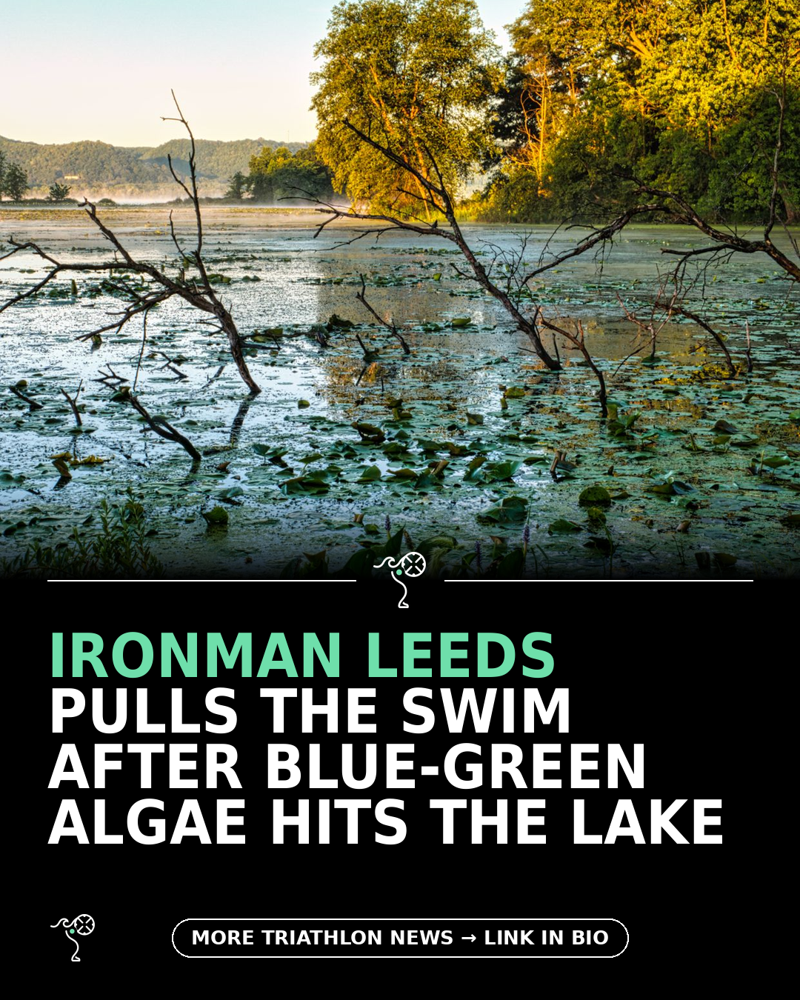

Triathlon News Daily
Sunday, 16 August 2026 · generated automatically

Today's stories
- Ironman Leeds scraps the swim over blue-green algae in the lake220 Triathlon
- Laura Philipp wins Ironman Kalmar by 18 minutes before Kona220 Triathlon
- Julie Derron runs down Kate Waugh for her first T100 win220 Triathlon
- Jonas Schomburg breaks through for a first Ironman win in Kalmar220 Triathlon
- A coach breaks down fasted training and whether triathletes should bother220 Triathlon
- Free 8-week winter strength training plan: Supercharge your strength and power for triathlon220 Triathlon